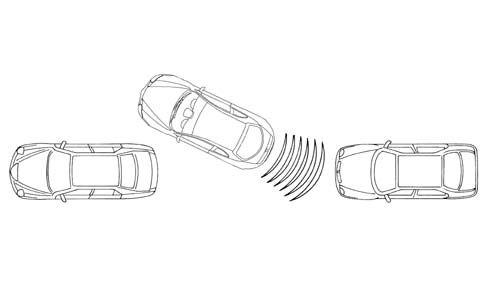
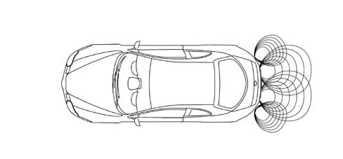
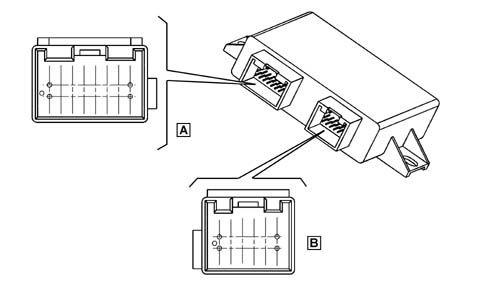
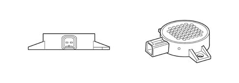

5580H PARKING OBSTACLE DETECTION DEVICE
- Path
- Descriptions > 55 ELECTRICAL EQUIPMENT > 5580 SPECIAL ACCESSORIES > 5580H PARKING OBSTACLE DETECTION DEVICE
- Kind
- system description
- Applies to
- all engines; all production periods
- Interactive page
- https://sloeber94.github.io/elrnDB-aGt/en/#/125000419
Applies to: all engines; all production periods
Parking Sensor System
The parking sensors provide the driver with information relating to distance when approaching obstacles either in front of or behind the vehicle. This aids parking manoeuvres by identifying obstacles outside the driver's field of view.
The information that there is an obstacle and its distance is transmitted to the driver by means of acoustic signals whose frequency depends on the distance from the obstacle.

The parking assistance system on the vehicle comprises the following components:
- an electronic control unit;
- 4 ultrasound sensors;
- 1 speaker (buzzer)
OPERATION
Activation and deactivation of the system
The system is activated in the following simultaneous conditions:
- Key ON
- Reverse gear engaged
When the system is activated the buzzer gives off a signal
If obstacles are present, it emits the obstacle distance signals whose frequency increase as the obstacle gets closer.
Obstacle distance signal
The distance measurements only take place when the system is activated.
The control unit processes the information supplied by the 4 sensors, operating the buzzer to signal the presence of any obstacles.
The buzzer warns the driver that the vehicle is approaching an obstacle. The tone lasts 75 ms, whilst the interval between the tones is directly proportional to the distance of the obstacle: impulses in rapid succession indicate that the obstacle is very close. A continuous tone indicates that the obstacle is less than 30 cm away.
The acoustic signal ceases immediately if the distance of the obstacle increases. The tone cycle remains constant if the distance measured by the centre sensors remains unchanged, whilst if this situation occurs for the side sensors, the signal is interrupted after 3 seconds (for example, to prevent signals in the case of manouevres alongside walls).
Rear obstacles are not signalled if there is a trailer or trailer hook.

Self-diagnosis
The control unit carries out an autodiagnostic test when it is switched on. The sensors are diagnosed each time they are activated.
Recovery strategies
The sensors and the wiring are continuously diagnosed during the operation of the system. A fault in even only one sensor will inhibit the operation of the entire system.
Error signal
Any faults/errors are signalled acoustically.
The acoustic signalling stops after 3 seconds.
Errors/faults are signalled immediately whilst the system is activated.
COMPONENT SPECIFICATIONS
Parking sensor control unit (cpa)
The CPA is an electronic component connected to the rear wiring which carries out functions helping the driver during manoeuvres with reverse gear engaged by detecting any obstacles behind the vehicle.
The CPA is connected to the sensors in the rear bumper and to a specific speaker located in the luggage compartment.
The CPA carries out the following functions:
- activating the sensors
- processing the signals received by the sensors
- checking the operation of the sensors
- activating the buzzer
- managing the diagnostics and the test functions
The electronic control unit has a device that provides protection against voltage fluctuations and short circuits

Parking control unit.
Control unit pinout:
CONNECTOR A
Pin | Signal |
|---|---|
1 | Ignition-operated supply with reverse gear engaged |
2 | Buzzer signal (-) |
3 | n.c. |
4 | n.c. |
5 | n.c. |
6 | Reversing signal |
7 | n.c. |
8 | Earth |
9 | Reversing signal repetition |
10 | Buzzer (+) |
11 | n.c. |
12 | n.c. |
13 | n.c. |
14 | n.c. |
15 | n.c. |
16 | Earth |
CONNECTOR B
Pin | Signal |
|---|---|
1 | Right interior sensor earth |
2 | Right interior sensor signal |
3 | Left interior sensor signal |
4 | Right exterior sensor signal |
5 | Left exterior sensor signal |
6 | Right interior sensor positive |
7 | Left interior sensor earth |
8 | Right exterior sensor earth |
9 | Left exterior sensor earth |
10 | Left interior sensor positive |
11 | Right exterior sensor positive |
12 | Left exterior sensor positive |
Ultrasound sensors
The sensors are ultrasoud transducers working like intelligent transmitters and receivers of ultrasound impulses. Both the impulse frequency and voltage is generated in the transducer.
The impulses emitted are reflected by any obstacles; the transducer therefore receives an echo which is amplified and converted into a digital signal and sent to the electronic control unit via the same line used for the transmission request.
Each sensor can also be operated as a receiver only, in oder to carry out a triangular measurement between two sensors. This technique allows for improved detection of small obstacles and in situations featuring critical reflections.
The sensors all have the same electrical and mechanical properties: the maximum detection distance for each sensor can be adapted using software depending on the location of the actual sensor.
Acoustic signaller
The acoustic signaller (buzzer) communicates information concerning distance, the activation of the system and any fault. The buzzer is located inside the passenger compartment.
The frequency and the volume can be controlled by the control unit.
